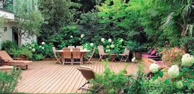
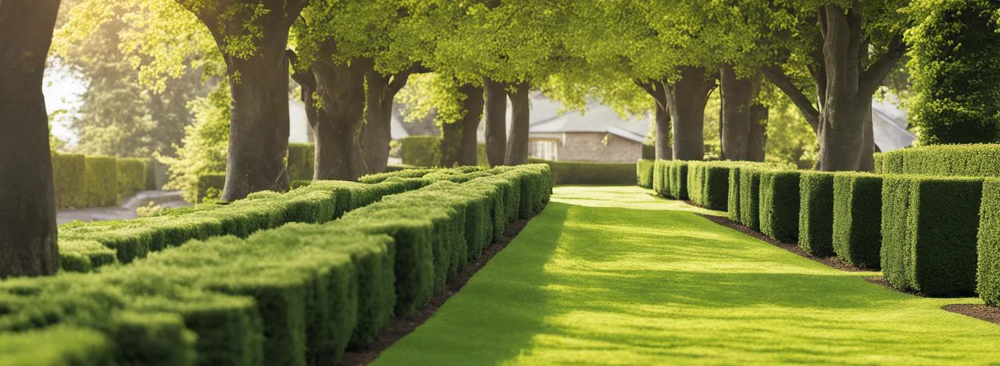
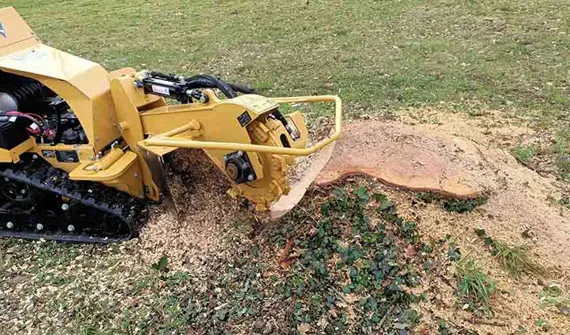

- Accueil
- Zones d’intervention
- Villeneuve-d’Ascq
Paysagiste à Villeneuve d’Ascq, 59491 avec Lagrene Paysagiste 59
Paysagiste à Villeneuve-d’Ascq · 59491
Dans le cadre magnifique de Villeneuve d’Ascq, 59491, Lagrene Paysagiste 59 s’engage à transcender les espaces extérieurs. Nous considérons chaque projet comme une opportunité de créer une symphonie visuelle entre la nature et l’art. Notre équipe d’experts paysagistes excelle dans la transformation de simples terrains en oasis enchanteurs. À travers une approche méticuleuse, nous concevons des jardins qui évoluent au fil des saisons, capturant l’énergie changeante de la nature tout en respectant l’architecture environnante. Chaque élément, du choix des plantes à la disposition des chemins, est soigneusement étudié pour offrir une expérience sensorielle et esthétique unique. Votre jardin devient ainsi un écosystème prospère, préservant la beauté de la nature tout en soutenant son équilibre. Nous explorons l’art du jardinage urbain chez Lagrene Paysagiste 59.
Notre savoir-faire
Devis paysagiste sur mesure pour tout Villeneuve d’Ascq, 59491
Pour concrétiser votre vision de jardin idéal, Lagrene Paysagiste 59 propose bien plus qu’un simple devis gratuit. Nous offrons une expérience de consultation approfondie, où chaque détail de votre projet est minutieusement exploré. Notre équipe collabore avec vous pour comprendre vos souhaits, vos besoins fonctionnels et esthétiques. À partir de cette compréhension approfondie, nous créons un plan paysager sur mesure. Ce devis détaillé est conçu pour vous donner une vision claire de l’ensemble du processus, y compris les matériaux, les coûts et les délais. Que vous rêviez d’un jardin zen, d’une oasis méditerranéenne ou d’un espace de vie extérieur convivial, notre équipe d’experts transforme vos idées en réalité. Chaque coin est pensé pour maximiser l’esthétique et la fonctionnalité, vous offrant un refuge parfaitement adapté à vos besoins.
Pour la création d’un paysage éblouissant
Lagrene Paysagiste 59 excelle non seulement dans la création de paysages éblouissants, mais aussi dans l’art délicat de l’élagage. Nos équipes d’experts, spécialisées dans l’élagage, sont formées pour comprendre les besoins spécifiques de chaque espèce d’arbre. Nous élaguons avec précision pour favoriser une croissance saine tout en préservant l’esthétique de l’arbre et en assurant son intégration harmonieuse dans votre environnement. Notre approche équilibrée entre préservation et sculpturalité permet à chaque arbre de rayonner dans votre paysage. Notre équipe met sa passion au service de la revitalisation de l’environnement, un projet qui va au-delà de la simple esthétique pour contribuer à la santé globale de la nature. En plus de notre travail de paysagisme, Lagrene Paysagiste 59 s’engage dans l’éducation environnementale

Paysagiste à Villeneuve-d’Ascq
Lagrene Paysagiste 59 incarne l’essence même de la créativité au service du paysage. Nos artisans paysagistes sont des artistes dans l’âme, transformant chaque projet en une œuvre d’art vivante. Chaque élément est méticuleusement conçu pour raconter une histoire, exprimer une émotion ou simplement capturer la beauté naturelle. En mêlant habilement des matériaux innovants à des techniques traditionnelles, notre équipe crée des espaces extérieurs uniques, des recoins intimes aux vastes panoramas. Cet équilibre subtil entre le passé et le présent permet de créer des environnements qui allient charme intemporel et fonctionnalité moderne. Chez Lagrene Paysagiste 59, la tradition rencontre l’innovation.




Paysagiste à Villeneuve-d’Ascq
Lagrene Paysagiste 59 : artisan paysagiste créatif
Lagrene Paysagiste 59 réunit une équipe polyvalente, des talents multiples sous un même toit. Nos services vont au-delà du simple aménagement paysager : conception, réalisation, entretien et bien plus encore. Qu’il s’agisse de transformer un espace vide en un jardin enchanteur ou de maintenir la splendeur de vos extérieurs existants, notre équipe engagée est là pour vous accompagner à chaque étape à Villeneuve d’Ascq, 59491. Nous organisons des ateliers, des conférences et des événements pour sensibiliser la communauté à l’importance de préserver les espaces verts. Lagrene Paysagiste 59 croit en la restauration et la préservation des espaces naturels. Lagrene Paysagiste 59, expert en aménagement paysager, transforme les espaces extérieurs en véritables œuvres d’art naturelles, combinant habilement expertise technique et sensibilité artistique.
Demander mon devis gratuitVotre projet
Équipe polyvalente de paysagistes
À Villeneuve d’Ascq, 59491, Lagrene Paysagiste 59 offre bien plus qu’un simple service de paysagisme. Nous sommes des conteurs d’histoires visuelles, des sculpteurs de paysages. Chaque projet est le fruit d’une réflexion approfondie, alliant notre expertise technique à une sensibilité artistique. Notre approche holistique embrasse les aspects esthétiques, fonctionnels et environnementaux pour créer des espaces extérieurs qui reflètent votre identité et votre style de vie. Chaque détail est minutieusement pensé pour offrir une expérience immersive dans un environnement harmonieux. Notre objectif est de créer une prise de conscience collective pour un avenir plus durable et respectueux de la nature.

Nos services à Villeneuve-d’Ascq
Huit savoir-faire pour votre jardin
Élagage, haies, pelouse, dessouchage, abattage et entretien : Lagrene Paysagiste 59 intervient à Villeneuve-d’Ascq (59491).
 01
01Élagage
Des arbres sains, sûrs et élégants.

02Dessouchage arbre et haie
Souches et racines retirées, terrain dégagé.
 03
03Taille de haie
Des haies nettes, denses et bien dessinées.
 04
04Création de pelouse
Un gazon dense, de la préparation du sol à la pose.
 05
05Abattage arbres et haies
Abattage d’arbres et de haies, travail soigné.
 06
06Jardinier
Entretien de jardin, de la tonte à la plantation.
 07
07Élagueur
Élagage de tout type d’arbre.
 08
08Taille de haie et arbres fruitiers
Des coupes pensées pour la floraison et la récolte.
Zones d’intervention
Nous intervenons aussi près de chez vous
Depuis Lille, Lagrene Paysagiste 59 se déplace à Villeneuve-d’Ascq et dans toutes les communes voisines.
38 boulevard Carnot, Bureau n° 3 · 59000 Lille